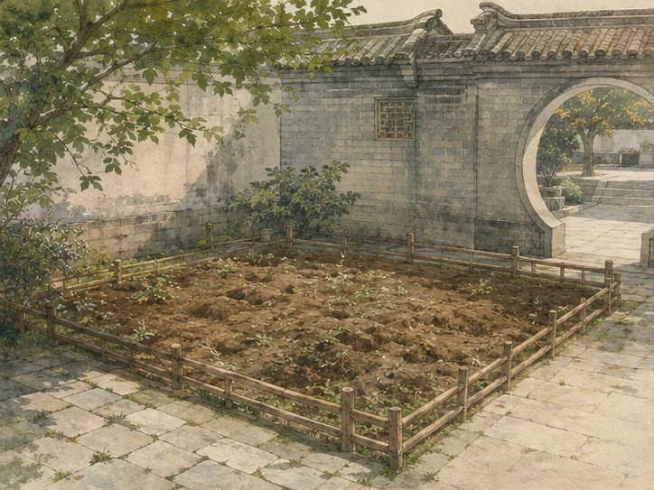

这一年的约定
照料土壤与根系，等到来年 4—5 月开花
- 准备
- 栽种
- 越冬
- 生长
- 盛花

先把土养好，花才会安心长大。
01
花圃状态一方素土

猫游洛阳 · 第二个小游戏
和橘小洛一起，把平凡的小花圃，养成春天盛开的牡丹小园。
九月 · 关键栽种
牡丹不喜欢被埋得太深。观察芽眼，选一个你觉得合适的深度。
盛夏的光落在刚翻松的土上。
这一年的花事
春这一园牡丹，终于等来了洛阳的春风。
土壤、根系与春季养护都很安稳，花开得丰盛又从容。